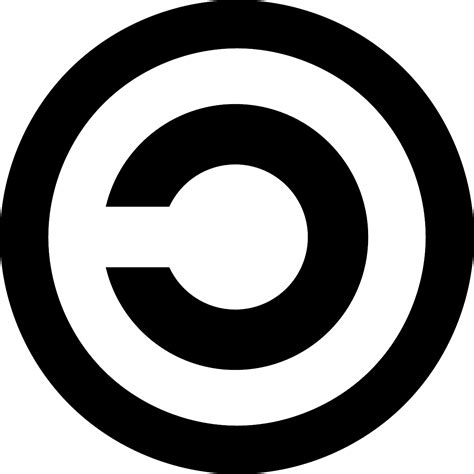

You hear the words IP ( Intellectual Property ) A lot these days. Big companies and law firms use this definition to set rules that are totally disrespectful of the rights of ordinary people.

The term IP implies that, that particular thing, be it a digital version of a song, a movie, or a piece of software is in fact some sort of PROPERTY, when Europeans came to the Americas, The Natives had no clue what the meaning of property was, When the white man proposed to buy Manhattan from the natives, they thought the idea of someone owning land as property was so bizarre that they wanted to sell the sky as well!
The relationship between us and the big firms/companies is not so different from that of the white man and natives, it is similar in the sense that we really don’t fathom the idea of IP because the reality is so bizarre that it doesn’t really make sense to us, normally we wouldn’t accept such things as patents and trade secretes, if we knew what those terms really entailed for us.
The Confusing nature of the term Property makes it so that A lot of people can be exploited. In my opinion the most important feature of anything that is considered Property is that it must be physically tangible meaning for example if you take a random carton of milk out of a supermarket without paying for it, the physical tangibility of that carton of milk elicit that the store owner has now suffered meaningful physical damage, meaning he now has one less carton of milk in supply, meaning he will not make enough money to equally benefit and buy the same carton of milk next month etc, etc.
Let’s consider for a moment a movie that was made in 2013, the current copyright law tells us that we have to wait for “the creator” to die plus 70 years to be able to “lawfully” redistribute the movie amongst ourselves, anything that isn’t that is unlawful and criminal.
It all seems to me that this definition is set in place for people with specific attributions to make money, what are these attributions you ask? Well it seems the more you are inclined to like usury, theft and making money without actually doing anything meaningful, this system would help you out better, consider Sony after the death of Michael Jackson ( and even before that !), just how much money do you think a company like Sony makes leeching off of the products of dead artists?
Now to be perfectly honest I’m not saying that we should get rid of the IP completely, I’m just presenting how the many confusing parts in the definition of IP are used to bleed hard working people and benefit the big companies who make money for the sake of existing, when unrealistic laws like the one mentioned above are set, many rights are taken away from us, and much like the Native-Americans, Many of us don’t really think ( or want to think ) how this effects us or maybe grasp the entire idea behind these laws, we are being bled dry from our rights and we don’t even fight back slightly for them.
To call those who harmlessly copy files and share them within some community the same thing you call savage thieves who raid normal ships and steal everything, truly shows the mental image they are trying to relay here, what they are basically saying is that if you copy a file “unlawfully”, what you have done amounts to about the same as, setting an entire ship full of harmless people on fire and stealing everything they have got. Despite their efforts though the term pirate has been embraced by the community, although it should never be forgotten where this word comes from.
What they are telling you in essence is that, someone could own a word and nothing stops them from demanding money from you just to use it, it’s just that they still haven’t found a way to justify that.
Basically what trade secrets are for is that, let’s say a company like Intel is the only company that is authorized to make the most used computer architecture (ISA) meaning if anyone else, could somehow through the means of reverse engineering, find a way to meaningfully manufacture the same computer architectures, they would be sued to hell by Intel, because they own the patent for that instruction set itself, so only they are allowed to create the CPUs, on which the entire infrastructure of computing is based. Meaning that if one day, Intel , for ANY reason, decided that it would be a good idea to introduce a unit next to our CPUs that has kernel level access to our computers, they could do so,and they do, and no one would be able to say a thing because we need them, because they are effectively embedded in our infrastructure. Now you tell me, doesn’t it seem kind of malicious the way all of these laws and terms are defined? It sure seems to me that the definitions of terms like Trade Secretes and Patents and IP in general can be easily used by major companies to seamlessly exploit us and there is effectively nothing we can do about it, unless we somehow realize and fight for the transformations of these laws and definitions themselves.
Veritas vos liberabit